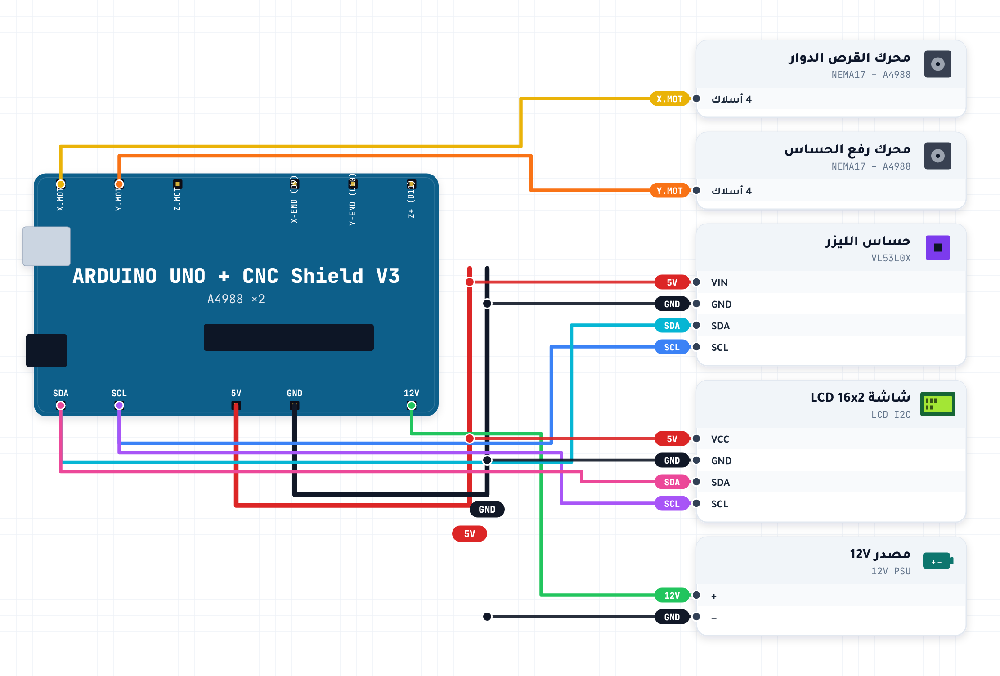

▶فيديو الشرح
قرص دوار وحساس ليزر يصعد طبقة بطبقة لتحويل أي مجسم إلى سحابة نقاط ثلاثية الأبعاد.
1المكونات
ARDUINO UNO + CNC Shield V3boardمحرك القرص الدوارNEMA17 + A4988محرك رفع الحساسNEMA17 + A4988حساس الليزرVL53L0Xشاشة LCD 16x2LCD I2Cمصدر 12V12V PSUأسلاك توصيلJumper Wiresلوحة تجاربBreadboard
2مخطط التوصيل

اضغط على المخطط لتكبيره · نسخة SVG عالية الدقة
| القطعة | الطرف | يوصل إلى |
|---|---|---|
| محرك القرص الدوار | 4 أسلاك | X.MOT |
| محرك رفع الحساس | 4 أسلاك | Y.MOT |
| حساس الليزر | VIN | 5V |
| حساس الليزر | GND | GND |
| حساس الليزر | SDA | SDA |
| حساس الليزر | SCL | SCL |
| شاشة LCD 16x2 | VCC | 5V |
| شاشة LCD 16x2 | GND | GND |
| شاشة LCD 16x2 | SDA | SDA |
| شاشة LCD 16x2 | SCL | SCL |
| مصدر 12V | + | 12V |
| مصدر 12V | − | GND |
3الكود
المكتبات المطلوبة (من Arduino IDE ← Sketch ← Include Library ← Manage Libraries):
- LiquidCrystal I2C — Frank de Brabander
- VL53L0X — Pololu
/* المستوى المتطور — المشروع 3: الماسح الضوئي ثلاثي الأبعاد ذو المحورين كتاب: 38 مشروع في شهر — لؤي النصري (@robotlouay) المكونات: Arduino Uno + CNC Shield V3 + مشغلان A4988 + محركا خطوة NEMA17 + حساس VL53L0X (Time-of-Flight) + شاشة LCD I2C المكتبات: "VL53L0X" (Pololu) + LiquidCrystal I2C التوصيل: CNC Shield فوق الأردوينو: المحور X (قرص الدوران): STEP → D2 DIR → D5 المحور Y (رفع الحساس): STEP → D3 DIR → D6 ENABLE → D8 (LOW = تشغيل) VL53L0X + LCD على I2C: SDA → A4 (SDA) SCL → A5 (SCL) VIN → 5V GND → GND تغذية المحركات: 12V على مدخل الطاقة في CNC Shield المخرجات: كل سطر في Serial (115200) = "x,y,z" بالمليمتر → احفظها كملف .xyz وافتحها في MeshLab أو CloudCompare لرؤية المجسم. */ #include <Wire.h> #include <VL53L0X.h> #include <LiquidCrystal_I2C.h> const int X_STEP = 2, X_DIR = 5, Y_STEP = 3, Y_DIR = 6, EN_PIN = 8; const int STEPS_PER_REV = 200 * 16; // NEMA17 + 1/16 microstep const int ANGLE_STEPS = 100; // 100 نقطة في كل دورة (3.6°) const int LAYERS = 60; // عدد الطبقات العمودية const float LAYER_MM = 1.0; // ارتفاع كل طبقة const int STEPS_PER_MM_Z = 400; // للعمود الملولب T8 (8mm/rev) مع 1/16 const float CENTER_MM = 120.0; // المسافة من الحساس إلى مركز القرص VL53L0X tof; LiquidCrystal_I2C lcd(0x27, 16, 2); void stepMotor(int stepPin, int dirPin, long steps, bool dir) { digitalWrite(dirPin, dir); for (long i = 0; i < steps; i++) { digitalWrite(stepPin, HIGH); delayMicroseconds(400); digitalWrite(stepPin, LOW); delayMicroseconds(400); } } void setup() { Serial.begin(115200); pinMode(X_STEP, OUTPUT); pinMode(X_DIR, OUTPUT); pinMode(Y_STEP, OUTPUT); pinMode(Y_DIR, OUTPUT); pinMode(EN_PIN, OUTPUT); digitalWrite(EN_PIN, LOW); // تفعيل المشغلات Wire.begin(); lcd.init(); lcd.backlight(); tof.setTimeout(500); if (!tof.init()) { lcd.print("VL53L0X error"); while (true); } tof.setMeasurementTimingBudget(50000); // دقة أعلى (50ms لكل قراءة) lcd.print("3D Scanner Ready"); delay(2000); } void loop() { for (int layer = 0; layer < LAYERS; layer++) { float z = layer * LAYER_MM; for (int a = 0; a < ANGLE_STEPS; a++) { float dist = tof.readRangeSingleMillimeters(); if (!tof.timeoutOccurred() && dist < CENTER_MM) { float r = CENTER_MM - dist; // نصف القطر من المركز float theta = a * 2.0 * PI / ANGLE_STEPS; Serial.print(r * cos(theta), 2); Serial.print(','); Serial.print(r * sin(theta), 2); Serial.print(','); Serial.println(z, 2); } stepMotor(X_STEP, X_DIR, STEPS_PER_REV / ANGLE_STEPS, HIGH); // تدوير القرص } stepMotor(Y_STEP, Y_DIR, (long)(LAYER_MM * STEPS_PER_MM_Z), HIGH); // رفع الحساس طبقة int progress = (layer + 1) * 100 / LAYERS; lcd.clear(); lcd.print("Scanning..."); lcd.setCursor(0, 1); lcd.print("Progress: "); lcd.print(progress); lcd.print("%"); } // انتهى المسح: إعادة الحساس للأسفل stepMotor(Y_STEP, Y_DIR, (long)(LAYERS * LAYER_MM * STEPS_PER_MM_Z), LOW); lcd.clear(); lcd.print("Scan complete!"); digitalWrite(EN_PIN, HIGH); while (true); }
4كيف يعمل؟
- القرص يدور 3.6° في كل خطوة
- VL53L0X يقيس البعد عن سطح المجسم
- الأردوينو يحوّل (الزاوية، البعد، الارتفاع) إلى X,Y,Z
- النقاط تُحفظ كملف .xyz
⚠ قبل توصيل الكهرباء: راجع كل سلك مع الجدول أعلاه، وتأكد من عدم وجود تماس بين 5V و GND. اختر اللوحة والمنفذ الصحيحين من قائمة Tools في Arduino IDE.